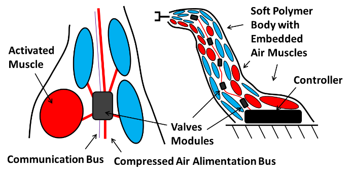

Abstract
As part of my master’s degree, I developed an Influence-Vectors control scheme for soft robot using cellular-like binary actuators. I successfully implemented it in Python for a soft pneumatic robot using two webcams as position sensors.
Publications & Resources
📚 Master's thesis (UdeS Savoirs): A. Girard, "Contrôle par vecteurs d'influence pour les robots à actionneurs cellulaires binaires."
📄 Journal (IEEE T-RO): A. Girard and J. Plante, "Influence Vectors Control for Robots Using Cellular-like Binary Actuators," IEEE Transactions on Robotics, vol. 30, no. 3, pp. 642–651, 2014.
📄 arXiv preprint: A. Girard and J. Plante, "Influence Vectors Control for Robots Using Cellular-like Binary Actuators," 2024.
Project Media
Concept

Concept